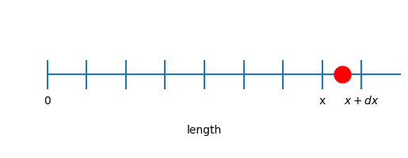

http://bit.ly/Phys141_7
Quantal responses at low levels

Recordings of rod cells to dim light revealed responses to single photons
Single photon absorption-like events in total darkness
Records of rod currents in darkness (two upper traces) and bright light (lower trace)
Discrete 1 pA transient events occurred at 0.031 sec-1 resembling single photon responses
John Milton
“Now the thought
Both of lost happiness and lasting pain
Torments him; round he throws his baleful eyes
That witnessed huge affliction and dismay
Mixed with obdurate pride and steadfast hate:
At once as far as angels ken he views
The dismal situation waste and wild,
A dungeon horrible, on all sides round
As one great furnace flamed, yet from those flames
No light, but rather darkness visible
Served only to discover sights of woe,
Regions of sorrow, doleful shades, where peace
And rest can never dwell, hope never comes
That comes to all; but torture without end
Still urges, and a fiery deluge, fed
With ever-burning sulfur unconsumed.”
Poisson interval distribution
Total of 82 dark events were counted over 2,631 seconds
Cumulative distribution of intervals between successive events fit to continuous curve
\[ n=N \left( 1 - \exp {\left( \frac{T}{\tau} \right)} \right) \]
Poisson interval distribution
Events occur with probability per unit time ($\lambda$)
Probability distribution of a waiting time between $t$ and $t+dt$ is exponential: $P(t)dt=\lambda e^{-\lambda t}dt$.
Mean waiting time: $\left< t \right> = \lambda$.
Shorter waiting times are more likely.
Poisson interval distribution

Divide the timeline from $0$ to $t$ into $N$ intervals, $\Delta t = t/N$.
Probability of non-occurrence in each interval is $1-\frac{\lambda t}{N}$.
Probability of non-occurrence in all $N$ intervals is $\left( 1-\frac{\lambda t}{N}\right)^N$
\[ \lim_{N \rightarrow \infty} \left( 1-\frac{\lambda t}{N}\right)^N = e^{-\lambda t} \]
Probability of occurrence in the last interval is $\lambda dt$
Q.E.D. Poisson interval distribution: $P(t)dt=\lambda e^{-\lambda t}dt$.
From Poisson interval to Poisson distribution
Instead of recording intervals, count the events that occur in a fixed time $t'$.
The probability that an event does not occur in the interval $t'$ is one minus the probability that an event does occur using the Poisson interval distribution:
\[ 1-\int_0^{t'}\lambda e^{-\lambda t}dt=e^{-\lambda t'} \]
This is the probability of zero events in a situation where the mean number is $\mu = \lambda t'$
So this can be calculated using the Poisson distribution, $P(k) = \frac{e^{-\mu}\mu^k}{k!}$ and $k=0$:
\[P(0)=e^{-\lambda t'}\]
From Poisson interval to Poisson distribution
The probability that one event occurs in the interval $t'$:
- the probability that one event occurs between $t_0$ and $t_0+dt_0$
- times the probability that zero events occur in the rest of the interval, $t'-t_0$
- integrated over all values of $t_0$:
\[ \int_0^{t'} \lambda e^{-\lambda t_0}e^{-\lambda (t'- t_0)} dt_0=\lambda t'e^{-\lambda t'} \]
From Poisson interval to Poisson distribution
The probability that two events occur in the interval $t'$ is
- the probability that one event occurs between $t_0$ and $t_0+dt_0$
- times the probability that one event occurs in the rest of the interval, $t'-t_0$
- integrated over all values of $t_0$:
\[ \int_0^{t'} \lambda e^{-\lambda t_0} \lambda (t'-t_0) e^{-\lambda (t'- t_0)} dt_0=\frac{(\lambda t')^2}{2}e^{-\lambda t'} \]
From Poisson interval to Poisson distribution
Proceeding in this fashion from zero to one to two events and so on...
The probability that $k$ events occur in the interval of time $t'$ is:
\[ P(k;\mu)= \frac{\mu^k}{k!}e^{-\mu} \]
The Poisson interval distribution can produce the Poisson distribution
Cold rods have less noise than warm rods
Arrhenius plot of frequency of occurrence of dark events in a rod
log scale against reciprocal absolute temperature
\[ \log{k} = A - \frac{B}{T} \]
Boltzmann kinetics

Reaction coordinate
From unactivated rhodopsin, $A$, to activated rhodopsin, $B$, an activation state slows the reaction.
Boltzmann kinetics:
\[ k_{A \Rightarrow B} \propto e^{-\frac{E_{act}}{k_B T}} \]
Boltzmann kinetics:
\[ \log{k_{A \Rightarrow B}} = c -\frac{E_{act}}{k_B T} \]
From linear regression of rod dark noise:
\[ E_{act} \approx 30 k_B T \]
Thermal activations in animal behavior

Fully dark-adapted toad
Illuminated from above by green light
Worm dummies under transparent floor
Image of dummy spanned 4,500 rods
12-16 °C
Only fed after each test
"Increased reluctance to snap at dummies was observed after two months"
Probabilities of seeing
Cold toads vs. warm humans

Abscissa: light intensity as a function of rate of rhodopsin photoisomerization (R* s-1)
Arrow: thermal isomerization rate for toads (4.9$\times$10-12 R* s-1)
Filled circles: snapping behaviors of Bufo bufo
Open circles: human probability of seeing in same apparatus
Probabilities of seeing
Thermal isomerizations rate grows 4-fold for every 10 °C rise
Monotonic relationship between threshold intensity and thermal isomerization rate

Correlation between thermal isomerizations rates (ordinate) and threshold intensities (abscissa) expressed as rates of isomerizations in toad (15 °C), frog (10, 16, 16, and 20 °C), and human (37 °C).